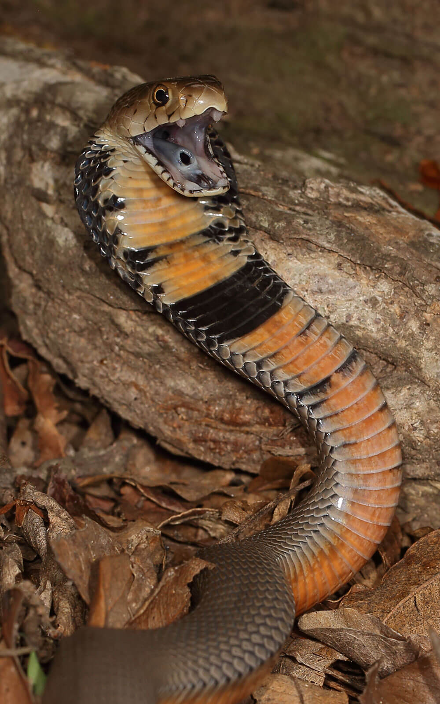

.jpg)
.jpg)

.jpg)
งูเห่าพ่นพิษโมซัมบิก (Mozambique Spitting Cobra)
ชื่อวิทยาศาสตร์: Naja mossambica
ลักษณะทั่วไป
เป็นหนึ่งในงูพิษที่มีอันตรายสูงและพบได้บ่อยในภูมิภาคแอฟริกาตอนใต้ มีความสามารถโดดเด่นในการพ่นพิษใส่ศัตรูได้อย่างแม่นยำ
- ขนาดลำตัว: เป็นงูเห่าขนาดปานกลาง ความยาวเฉลี่ยเมื่อโตเต็มวัยอยู่ที่ 90–100 เซนติเมตร (0.9–1 เมตร) แต่บางตัวอาจเจริญเติบโตจนยาวได้สูงสุดถึง 1.5 เมตร
- รูปร่างและเกล็ด: ลำตัวค่อนข้างเพรียวยาวแต่แข็งแรง หัวกลมเรียว มนกลืนไปกับคอเมื่อไม่ได้ชูแม่เบี้ย เกล็ดบนลำตัวมีลักษณะเรียบมัน
- การแผ่แม่เบี้ย: สามารถแผ่แม่เบี้ยได้แคบกว่างูเห่าทางฝั่งเอเชีย (เช่น งูเห่าไทย) แต่จะยกส่วนหน้าของลำตัวขึ้นสูงเพื่อเตือนศัตรูและเตรียมพ่นพิษ
- สีสันด้านบน (ลำตัว): มีสีสันหลากหลาย ตั้งแต่สีเทาสเลต (Slate gray) สีน้ำตาลทอง ไปจนถึงสีส้มอมน้ำตาล ขอบของเกล็ดแต่ละเกล็ดมักมีสีดำเข้ม ทำให้ดูมีมิติ
- สีสันด้านล่าง (ใต้ท้อง): มีจุดเด่นที่สีสดใส เช่น สีชมพู Salmon หรือสีส้มอ่อน สลับกับแถบหรือจุดสีดำเข้มบริเวณคอและช่วงบนของท้อง ซึ่งเป็นลักษณะเฉพาะที่ใช้จำแนกสายพันธุ์นี้ได้อย่างชัดเจน
- กินสัตว์ได้หลากหลาย (Generalist Feeder): ไม่เลือกกินเหมือนงูบางชนิด อาหารหลัก ได้แก่ กบ คางคก สัตว์เลื้อยคลานขนาดเล็ก (กิ้งก่า, จิ้งเหลน) และสัตว์เลี้ยงลูกด้วยนมขนาดเล็กอย่างหนู
- กินงูด้วยกัน (Ophiophagy): เป็นนักล่างูตัวจริง มักกินงูชนิดอื่น รวมถึงงูพิษที่มีขนาดเล็กกว่า หรือแม้งูกระจอก (Garter snakes) และงูเห่าด้วยกันเอง
- กินซากสัตว์ (Scavenging): มีพฤติกรรมที่ไม่ค่อยพบในงูเห่าทั่วไป คือการกินซากสัตว์ที่เน่าตายแล้วหากหาเหยื่อสดไม่ได้
งูเห่าพ่นพิษโมซัมบิก มีพฤติกรรมการหากินและนิสัยเฉพาะตัวที่น่าสนใจดังนี้
- ออกหากินกลางคืน: มักหลบซ่อนตัวตามรอยแตกของหิน จอมปลวก หรือท่อนไม้ในเวลากลางวัน และออกล่าตั้งแต่ช่วงพลบค่ำจนถึงกลางคืน
- การป้องกันตัวแบบดุร้าย: เมื่อถูกคุกคาม จะชูแม่เบี้ย เตือนด้วยการขู่ และพ่นพิษใส่ดวงตาของศัตรูทันทีโดยไม่ต้องรอให้เข้าใกล้ พิษสามารถพ่นได้แม่นยำในระยะ 2–3 เมตร
- การแกล้งตาย (Thanatosis): หากตกใจสุดขีดหรือรู้สึกว่าการพ่นพิษไม่ได้ผล บางครั้งจะนอนนิ่ง ท้องชี้ฟ้า แกล้งทำเป็นตายเพื่อหลอกศัตรูให้เลิกสนใจ
- การปรับตัวเข้าใกล้ชุมชน: มักเลื้อยเข้ามาใกล้เขตที่อยู่อาศัยของมนุษย์เพื่อหาอาหาร (หนู) หรือหาน้ำ ส่งผลให้เป็นหนึ่งในงูที่ก่อให้เกิดอุบัติเหตุโดนกัดหรือพ่นพิษใส่ผู้คนมากที่สุดในแอฟริกาตอนใต้
ถิ่นอาศัย พิษ และความอันตราย
- ถิ่นอาศัย:
- โมซัมบิก (Mozambique): พบได้ทั่วทั้งประเทศ ซึ่งเป็นที่มาของชื่อสายพันธุ์
- แอฟริกาใต้ (South Africa): พบมากในแถบจังหวัด KwaZulu-Natal (ลงไปถึง Durban), Mpumalanga และ Limpopo
- ซิมบับเว (Zimbabwe), แซมเบีย (Zambia) และมาลาวี (Malawi)
- บอตสวานา (Botswana) และนามิเบีย (Namibia): พบได้ทางตอนเหนือและตะวันออก
- แทนซาเนีย (Tanzania): ทางตอนใต้และตะวันออกเฉียงใต้ รวมถึงเกาะเพมบา (Pemba Island)
- แองโกลา (Angola) และเอสวาตินี (Eswatini)
- ทุ่งหญ้าสะวันนาและป่าละเมาะ (Savanna & Woodland): เป็นถิ่นอาศัยหลัก ชอบพื้นที่โปร่งที่มีพุ่มไม้และหญ้าขึ้นปกคลุม
- ใกล้แหล่งน้ำ (Near Water): ชอบอาศัยอยู่ใกล้แม่น้ำ หนอง บึง หรือลำธาร และสามารถว่ายน้ำได้ดีหากถูกรบกวน
- โขดหินและจอมปลวก (Rocky Outcrops & Termite Mounds): มักใช้รอยแตกของหิน รูจอมปลวก หรือท่อนไม้ผุเป็นที่หลบซ่อนตัวในเวลากลางวัน
- ระดับความสูง: พบได้ตั้งแต่พื้นที่ราบชายฝั่งทะเลไปจนถึงพื้นที่เนินเขาสูงถึงประมาณ 1,500 เมตรจากระดับน้ำทะเล
- คอกสัตว์และบ้านเรือน: มักเลื้อยเข้ามาตามฟาร์ม เล้าไก่ หรือในบ้านเรือนเพื่อตามล่าหนู กบ หรือซากอาหาร
- ความเสี่ยงต่อมนุษย์: เนื่องชอบซ่อนตัวในที่แคบและมักเข้ามาใกล้เขตชุมชน ทำให้ชาวบ้านหรือนักท่องเที่ยวในแอฟริกาตอนใต้มีโอกาสประเผชิญหน้าหรือฉีด/โดนพ่นพิษใส่ได้ง่าย โดยเฉพาะในเวลากลางคืน
- พิษ:
- ลำดับอาการหลังถูกกัด (Clinical Symptoms Timeline)
- มีความเจ็บปวดอย่างรุนแรงแบบปวดแสบร้อนทันที ณ บริเวณรอยกัด
- บริเวณแผลเริ่มบวมแดงอย่างรวดเร็ว และความบวมจะขยายกว้างขึ้นเรื่อยๆ
- เกิดตุ่มน้ำพอง (Blisters) หรือตุ่มเลือดใสๆ ขึ้นรอบบาดแผล
- เนื้อเยื่อบริเวณแผลเริ่มเปลี่ยนเป็นสีน้ำเงิน เทา หรือดำ ซึ่งแสดงถึงการเริ่มตายของเซลล์
- เนื้อเยื่อเน่าตาย (Tissue Necrosis): พิษกัดกร่อนชั้นผิวหนัง กล้ามเนื้อ และเส้นเลือด ส่งผลให้เกิดแผลเน่าเป็นวงกว้าง
- เสี่ยงต่อการตัดอวัยวะ: หากเนื้อเยื่อลุกลามตายถึงระดับกล้ามเนื้อและกระดูก ผู้ป่วยอาจต้องเข้ารับการผ่าตัดตกแต่ง (Debridement) หรือตัดอวัยวะส่วนนั้นทิ้ง
- อาการทางระบบอื่นๆ: แม้จะพบได้น้อยกว่า แต่พิษอาจทำให้เกิดอาการคลื่นไส้ อาเจียน ไข้ขึ้น หรือมีความดันโลหิตต่ำลงได้
- ความรู้สึก: แสบปวดตาอย่างรุนแรงทันที เหมือนถูกน้ำกรดหรือสารเคมีแสบร้อนฉีดใส่
- อาการทางกายภาพ: ตาแดง น้ำตาไหลมาก ไม่สามารถลืมตาต้านแสงได้ (Photophobia) และเปลือกตาบวมเต่ง
- ผลกระทบระยะยาว: หากล้างออกไม่ทันการณ์ พิษจะกัดกร่อนกระจกตาจนเกิดเป็นแผล (Corneal Ulceration) ส่งผลให้ติดเชื้อและตาบอดถาวรได้
-
ระดับความอันตราย: โคตรอันตราย ☠☠☠☠☠:
- โอกาสพบเจอ (High Risk): เป็นงูเห่าที่พบได้บ่อยที่สุดชนิดหนึ่งในแอฟริกาตอนใต้และตะวันออก ปรับตัวเก่ง และมักรุกล้ำเข้ามาในเขตฟาร์ม คอกสัตว์ หรือเล้าไก่ใกล้วิถีชีวิตมนุษย์เพื่อหาอาหาร ทำให้มีอัตราการเผชิญหน้ากับคนสูงมาก
- พฤติกรรม (Aggressive Defense): ดุร้ายกว่างูทั่วไป เมื่อรู้สึกถูกคุกคามจะพร้อมโจมตีล่วงหน้าทันที โดยสามารถพ่นพิษใส่ดวงตาได้แม่นยำจากระยะไกลถึง 2–3 เมตร โดยไม่จำเป็นต้องรอให้มนุษย์เดินเข้าไปสัมผัสหรือเหยียบตัว
- ความรุนแรงของพิษ (Destructive Cytotoxin):
- กรณีโดนกัด: พิษทำลายเซลล์เข้มข้นสูง ส่งผลให้เนื้อเยื่อเน่าตาย (Necrosis) เป็นวงกว้างอย่างรวดเร็ว บาดแผลรุนแรงจนนำไปสู่การต้องผ่าตัดตกแต่ง สภาพอวัยวะพิการ หรือต้องตัดอวัยวะทิ้ง
- กรณีพ่นใส่ตา: หากล้างออกไม่ทันท่วงที พิษจะกัดกร่อนกระจกตาจนส่งผลให้ตาบอดถาวร
- สถิติการทำร้าย: ติดอันดับต้นๆ ของงูที่ก่อให้เกิดอุบัติเหตุฉุกเฉินและการบาดเจ็บร้ายแรงแก่ผู้คนมากที่สุดในภูมิภาคแอฟริกาตอนใต้
งูเห่าพ่นพิษโมซัมบิกเป็นหนึ่งในงูเห่าที่พบได้บ่อยที่สุดในภูมิภาคแอฟริกาตอนใต้และแอฟริกาตะวันออก โดยมีถิ่นกระจายพันธุ์ครอบคลุมหลายประเทศ ได้แก่:
งูชนิดนี้มีความสามารถในการปรับตัวเข้ากับสภาพแวดล้อมได้ดีมาก แต่จะชอบพื้นที่ที่มีความชื้นและมีแหล่งซ่อนตัว:
งูเห่าพ่นพิษโมซัมบิกมีความทนทานต่อการเปลี่ยนแปลงของถิ่นที่อยู่สูง และมักรุกล้ำเข้ามาใกล้เขตที่อยู่อาศัยของมนุษย์:
ต่างจากงูเห่าเอเชียทั่วไปอย่างงูเห่าไทย (Naja Kaouthia) ที่พิษมุ่งทำลายระบบประสาท (Neurotoxin) พิษของงูเห่าพ่นพิษโมซัมบิกประกอบด้วย Cytotoxin (พิษทำลายเซลล์และเนื้อเยื่อ) และ Postsynaptic Neurotoxin (พิษต่อระบบประสาท) ในปริมาณเล็กน้อย ความอันตรายหลักจึงเกิดจากการทำลายเนื้อเยื่อในบริเวณที่ถูกกัดอย่างรุนแรง
1. อาการทันทีหลังถูกกัด (0 - 30 นาที):
2. อาการระยะกลาง (ไม่กี่ชั่วโมงแรก):
3. อาการระยะรุนแรง (12 - 48 ชั่วโมง):
หากงูพ่นพิษเข้าสู่ดวงตาโดยตรง พิษจะไม่เข้าสู่กระแสเลือด แต่จะทำลายเซลล์กระจกตา:
Fun Fact
- พ่นพิษได้ "ทุกท่า" โดยไม่ต้องชูแม่เบี้ยก่อน: งูเห่าทั่วไปเวลาจะตั้งรับมักต้องชูคอแผ่แม่เบี้ยขึ้นสูง แต่งูเห่าโมซัมบิกมีรูเปิดที่เขี้ยวทำมุมเป็นพิเศษ ทำให้สามารถพ่นกระสุนพิษพุ่งออกจากปากได้ทันทีแม้ในขณะที่นอนราบอยู่บนพื้น หรือแอบซ่อนอยู่ในซอกแคบๆ โดยไม่จำเป็นต้องชูแม่เบี้ยเตือนล่วงหน้า
- ฉลาดพอที่จะ "แกล้งตาย" เมื่อจวนตัว: หากการพ่นพิษใส่ศัตรูไม่ได้ผล หรือเจอกับศัตรูที่มีขนาดใหญ่เกินไป พวกมันจะใช้กลยุทธ์ทริกเกอร์ทางจิตวิทยาด้วยการนอนหงายท้อง ชี้ท้องสีชมพูขึ้น อ้าปากค้าง นิ่งสนิทเพื่อ "แกล้งตาย" (Feigning death) ทำให้ศัตรูหมดความสนใจและเลิกโจมตีไปเอง
- กิน "ซากสัตว์เน่า" ได้อย่างไม่เกี่ยง: โดยทั่วไป งูมักจะเลือกล่าเหยื่อที่มีชีวิตหรือเพิ่งตายใหม่ๆ แต่งูเห่าพ่นพิษโมซัมบิกมีพฤติกรรมสุดแปลกคือการเป็น Scavenger (สัตว์กินซาก) มันสามารถกินซากสัตว์ที่ขึ้นอืดและกำลังเน่าเปื่อยรุนแรงได้อย่างสบายๆ หากมันหาเหยื่อสดไม่ได้